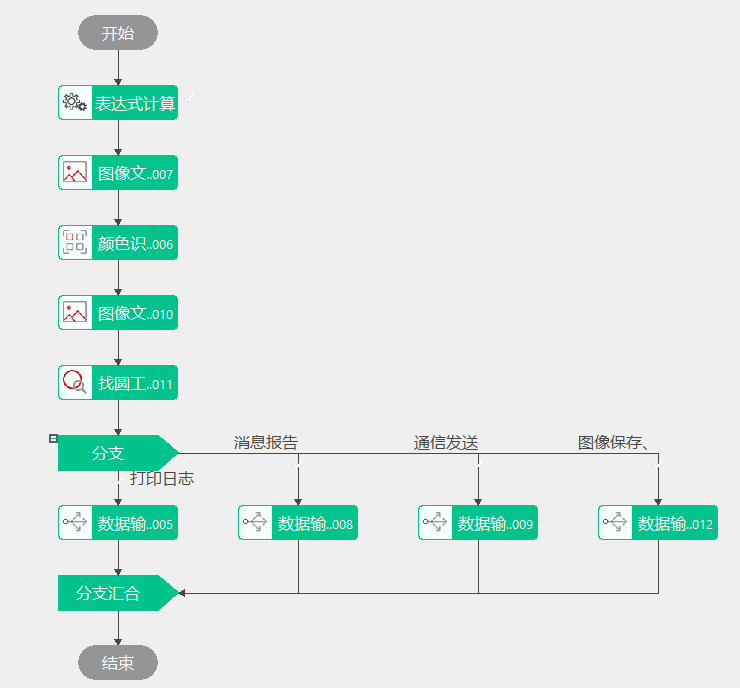
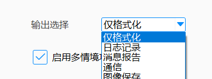
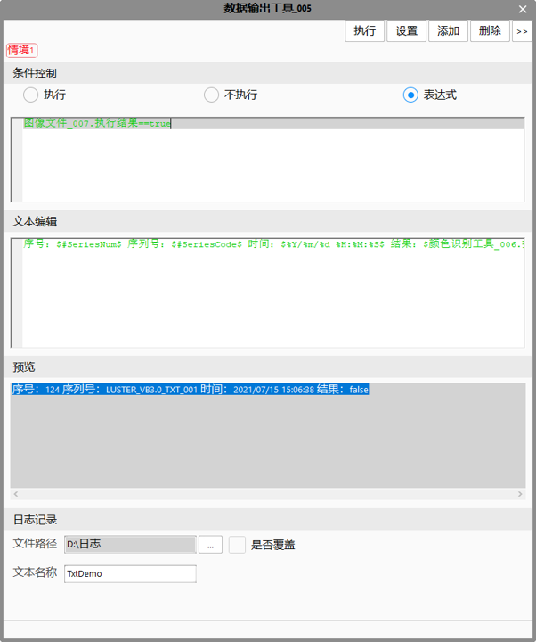
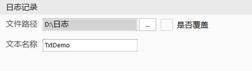
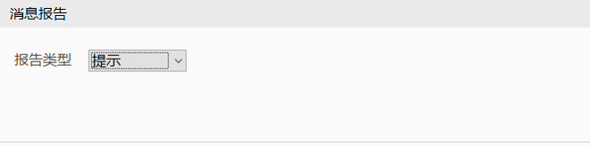
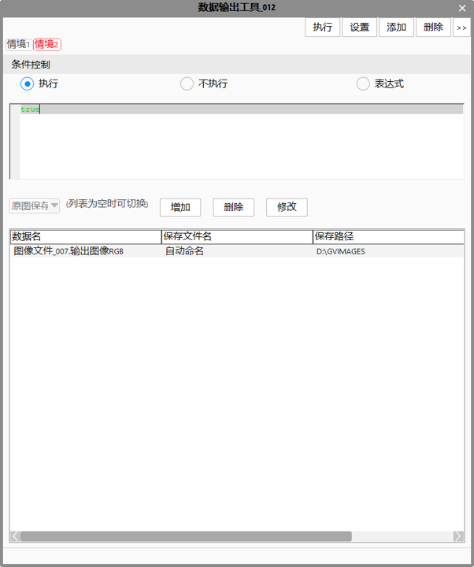
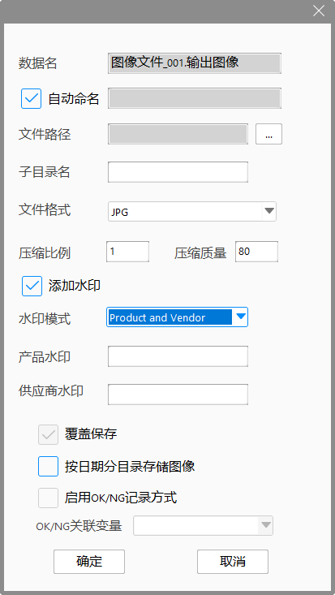
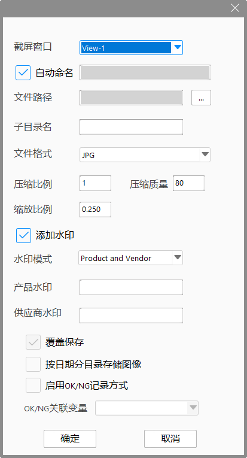
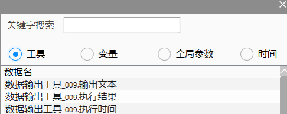

Chức năng chính của công cụ xuất dữ liệu là linh hoạt chuyển đổi các loại dữ liệu khác nhau từ nhiều nguồn thành chuỗi ký tự. Chuỗi được tạo ra có thể được xuất cho các công cụ khác, ghi vào tệp TXT, hiển thị trên cửa sổ thông báo, hoặc gửi qua giao tiếp. Ngoài ra, công cụ xuất dữ liệu còn có thể dùng để lưu ảnh và chụp màn hình.
Các kịch bản ứng dụng chính của công cụ xuất dữ liệu được chia thành hai loại: một là định dạng và xuất chuỗi ký tự, hai là lưu ảnh.
Định dạng và xuất chuỗi ký tự. Trước đây, các thao tác liên quan đến chuỗi khá phức tạp, như giao tiếp, báo cáo thông báo, ghi nhật ký, gửi dữ liệu,... cần dùng công cụ đóng gói dữ liệu để đóng gói trước, sau đó dùng công cụ định dạng để định dạng, rồi mới có thể tiếp tục các bước tiếp theo. Quá trình này rườm rà, lưu đồ phức tạp và dư thừa, đặc biệt khi có nhiều nhánh xử lý:

Việc sử dụng công cụ xuất dữ liệu giúp đơn giản hóa thao tác, chỉ cần thêm một công cụ xuất dữ liệu là có thể hoàn thành.
Chức năng lưu ảnh. Trước đây, khi cần lưu ảnh từ các công cụ thu ảnh khác nhau hoặc cần lưu ảnh và chụp màn hình đồng thời, phải tạo nhiều công cụ lưu ảnh hoặc công cụ chụp màn hình. Chức năng lưu ảnh của công cụ xuất dữ liệu hỗ trợ lưu nhiều ảnh cùng lúc, đồng thời hỗ trợ lưu cả ảnh gốc và ảnh chụp màn hình.
Việc xuất văn bản là đưa các tham số công cụ và biến được tham chiếu vào chuỗi vào hộp chỉnh sửa văn bản, sau đó phân tích nội dung văn bản để tạo chuỗi đã định dạng, rồi thực hiện xuất dữ liệu. Việc lưu ảnh là thêm dữ liệu ảnh hoặc giao diện cần lưu vào danh sách lưu, sau đó tiến hành lưu ảnh hàng loạt.

Lựa Chọn Xuất
Lựa chọn xuất có thể là chỉ định dạng, ghi nhật ký, báo cáo thông báo, giao tiếp và lưu ảnh. Chọn chỉ định dạng, công cụ sẽ chỉ thực hiện chức năng định dạng chuỗi, chuỗi tạo ra sẽ được xuất cho các công cụ khác sử dụng; chọn ghi nhật ký, chuỗi tạo ra sẽ được ghi vào file nhật ký; chọn báo cáo thông báo, chuỗi tạo ra sẽ được xuất ra cửa sổ thông báo; chọn giao tiếp, công cụ sẽ đóng vai trò bên gửi, gửi chuỗi đến bên nhận giao tiếp, chỉ hỗ trợ giao tiếp không có giao thức; chọn lưu ảnh, công cụ sẽ dùng để lưu ảnh, hỗ trợ lưu ảnh gốc và ảnh chụp màn hình.
Kích Hoạt Chức Năng Nhiều Tình Huống
Tình huống là các nhánh có thể thiết lập điều kiện thực thi và nội dung xuất riêng biệt, khi kích hoạt nhiều tình huống, bạn có thể thêm nhiều nhánh, mỗi nhánh có thể thiết lập điều kiện thực thi riêng; như vậy sẽ tích hợp nhiều nhánh bên trong công cụ. Khi có nhiều tình huống cùng thỏa mãn điều kiện thực thi, kết quả xuất của tình huống thực thi đầu tiên sẽ là kết quả xuất của công cụ xuất dữ liệu.

Thực Thi
Thực thi thủ công công cụ xuất dữ liệu.
Cài Đặt
Cài đặt các tham số chung của công cụ xuất dữ liệu, bao gồm số chữ số thập phân giữ lại và độ rộng của số nguyên.
Thêm
Khi kích hoạt chức năng nhiều tình huống, dùng để thêm tình huống.
Xóa
Dùng để xóa tình huống hiện tại.
Điều Khiển Điều Kiện
Thực thi: tình huống này luôn được thực thi;
Không thực thi: tình huống này sẽ không được thực thi;
Biểu thức: kiểm soát việc thực thi tình huống thông qua biểu thức.
Chỉnh Sửa Văn Bản
Chỉnh sửa nội dung muốn xuất, có thể chèn thêm dữ liệu qua cửa sổ chèn dữ liệu, văn bản chỉnh sửa cuối cùng sẽ được phân tích và tạo thành chuỗi ký tự.
Xem Trước
Hiển thị kết quả phân tích nội dung văn bản chỉnh sửa theo thời gian thực.
Lựa chọn xuất khác nhau, cửa sổ sẽ hiển thị các tham số khác nhau. Khi chọn chỉ định dạng, không có tham số nào.
Khi lựa chọn xuất là ghi nhật ký, cửa sổ tham số như sau:

Đường dẫn file, thiết lập đường dẫn tạo file nhật ký;
Tên văn bản, thiết lập tên file nhật ký;
Có ghi đè hay không, có ghi đè file cùng tên đã tạo trước đó hay không. Nếu không chọn, nội dung xuất sẽ được thêm vào cuối file đã tồn tại.
Khi lựa chọn xuất là báo cáo thông báo, cửa sổ tham số như sau:

Loại báo cáo, thiết lập loại báo cáo thông báo, bao gồm: thông tin, cảnh báo, lỗi, lỗi nghiêm trọng, thông báo bật lên, thông báo tùy chọn và thông báo tùy chỉnh;
Vô hiệu hóa cửa sổ bật lên, thiết lập khi hiển thị thông báo có cấm bật cửa sổ hay không.
Khi lựa chọn xuất là giao tiếp, cửa sổ tham số như sau:
Cổng giao tiếp, thiết lập cổng dùng để gửi dữ liệu, chỉ hỗ trợ cổng không có giao thức.
Quản lý giao tiếp, nhấn nút quản lý giao tiếp sẽ hiện ra hộp thoại quản lý giao tiếp.

Nhấp đúp vào mục dữ liệu trong danh sách, dữ liệu tương ứng sẽ được chèn vào ô chỉnh sửa.
Tìm kiếm bằng từ khóa
Thông qua từ khóa nhập vào ô chỉnh sửa văn bản để lọc các mục dữ liệu hiển thị trong danh sách.
Công cụ
Khi chọn công cụ, danh sách sẽ hiển thị các tham số liên quan đến công cụ đó.
Biến
Khi chọn biến, biến đó sẽ được hiển thị trong danh sách.
Tham số toàn cục
Khi chọn tham số toàn cục, tất cả các tham số toàn cục sẽ được hiển thị trong danh sách.

Khi lựa chọn xuất là lưu ảnh, phần điều khiển thực thi và quản lý tình huống giống với các chức năng khác của công cụ xuất dữ liệu.
Danh sách thả xuống có thể chọn lưu ảnh gốc hoặc lưu ảnh chụp màn hình, chỉ khi danh sách trống mới có thể chuyển đổi lựa chọn, nhằm tránh dữ liệu lưu ảnh gốc và ảnh chụp màn hình bị trộn lẫn trong cùng một tình huống.
Khi lưu ảnh gốc, nhấn nút thêm sẽ hiện cửa sổ chỉnh sửa dữ liệu ảnh gốc, như hình dưới đây.

Khi lưu ảnh chụp màn hình, nhấn nút thêm sẽ hiện cửa sổ chỉnh sửa dữ liệu ảnh chụp màn hình, như hình dưới đây.

Xóa
Khi trong danh sách có một hoặc nhiều dữ liệu được chọn, nút xóa sẽ khả dụng. Nhấn nút xóa, các dữ liệu được chọn sẽ bị xóa.
Sửa
Khi trong danh sách chỉ có một dữ liệu được chọn, nút sửa sẽ khả dụng. Nhấn nút sửa, cửa sổ chỉnh sửa dữ liệu sẽ hiện ra, nếu là dữ liệu lưu ảnh gốc thì hiện cửa sổ chỉnh sửa dữ liệu lưu ảnh gốc, nếu là dữ liệu lưu ảnh chụp màn hình thì hiện cửa sổ chỉnh sửa dữ liệu lưu ảnh chụp màn hình.
Tên dữ liệu
Tên tham số dữ liệu, đối với loại dữ liệu ảnh hỗ trợ lưu ảnh xám, ảnh RGB, ảnh chiều sâu và ảnh đường viền. Khi di chuột vào ô chỉnh sửa, cửa sổ chèn dữ liệu ảnh sẽ tự động hiện ra, như hình dưới. Nhấp đúp vào dữ liệu trong danh sách, tên dữ liệu tương ứng sẽ được chèn vào ô tên dữ liệu. Nhấp đúp vào mục khác sẽ ghi đè dữ liệu cũ trong ô chỉnh sửa.

Cửa sổ chụp màn hình
Chọn cửa sổ muốn chụp màn hình, ví dụ View-1.
Tự động đặt tên
Có sử dụng tên file do hệ thống đặt hay không, nếu không chọn, cần nhập tên file trong ô chỉnh sửa, ô này hỗ trợ chèn văn bản từ cửa sổ chèn dữ liệu. Nếu chọn, tên file trong danh sách sẽ hiển thị là tự động đặt tên.
Đường dẫn file
Thiết lập đường dẫn lưu ảnh. Đường dẫn thuộc hệ thống.
Định dạng file
Đối với lưu ảnh gốc có thể chọn tự động, BMP, JPG, RDB, FDB, PNG; với JPG cần cài đặt tỉ lệ nén và chất lượng, mặc định là BMP; đối với lưu ảnh chụp màn hình có thể chọn tự động, BMP, JPG, mặc định là BMP.
Tỉ lệ nén
Chỉ dùng khi định dạng file là JPG, các định dạng khác sẽ ẩn giao diện này, dùng để thiết lập tỉ lệ nén ảnh, chỉ hỗ trợ các giá trị 1, 2, 4, 8, các giá trị khác không hợp lệ, mặc định là 1.
Chất lượng nén
Chỉ dùng khi định dạng file là JPG, các định dạng khác sẽ ẩn giao diện này, dùng để thiết lập chất lượng nén ảnh, giá trị từ 1 đến 100, mặc định là 80.
Tỉ lệ phóng to
Tỉ lệ phóng to màn hình, giá trị từ 0.001 đến 1.00, mặc định là 0.25.
Thêm watermark
Có thêm watermark hay không, nếu không chọn thì chế độ watermark và thông tin watermark không thể chỉnh sửa. Nếu chọn thì có thể tiếp tục chọn chế độ watermark.
Chế độ watermark
Chế độ watermark gồm ba loại: Product, Vendor và Product and Vendor, chọn một trong các chế độ này và chỉnh sửa thông tin watermark.
Watermark sản phẩm
Khi chế độ watermark là Product hoặc Product and Vendor thì có thể chỉnh sửa, chọn thông tin watermark mong muốn.
Watermark nhà cung cấp
Khi chế độ watermark là Vendor hoặc Product and Vendor thì có thể chỉnh sửa, chọn thông tin watermark mong muốn.
Ghi đè khi lưu
Khi không chọn tự động đặt tên và tên file không rỗng, có ghi đè file cùng tên khi lưu hay không. Khi tự động đặt tên thì tính năng này bị vô hiệu hóa.
| Mô tả hiện tượng | Phương pháp giải quyết |
|---|---|
| Công cụ thực thi báo lựa chọn xuất bị trống | Trong dự án, nhấp chuột phải chọn, bấm thuộc tính, trong cửa sổ khởi tạo hiện ra chọn phần xuất |
| Chuỗi xuất của công cụ bị trống, phần xem trước trong giao diện thuộc tính nâng cao cũng trống | Tham số hoặc giá trị biến được tham chiếu có thể bị trống, kiểm tra lại giá trị tham số hoặc biến |
| Chuỗi xuất của công cụ bị mã hóa sai (ký tự rối) | Xem cửa sổ xem trước, nếu cửa sổ xem trước cũng bị mã hóa sai thì chuỗi nhập vào ô chỉnh sửa có định dạng sai, có thể xóa dữ liệu bị lỗi rồi chỉnh sửa lại |
| Khi chọn gửi qua giao tiếp, báo gửi thất bại | Kiểm tra trạng thái kết nối giao tiếp và trạng thái cổng có bình thường không, nếu trạng thái kết nối hoặc cổng bất thường thì xử lý vấn đề kết nối trước |
| Khi bật đa tình huống, báo tất cả các tình huống đều không thực thi | Kiểm tra điều kiện thực thi của từng tình huống, xem có phải tất cả đều là false không, nếu đều false thì sửa điều kiện thực thi, nếu không thì công cụ đang ở trạng thái vô hiệu |
| Khi công cụ xuất dữ liệu lưu ảnh bị lỗi lưu ảnh | Kiểm tra dữ liệu ảnh đã chèn trong danh sách ảnh có bình thường không |
Không có
| Tên tham số | Giải thích tham số |
|---|---|
| Kết quả thực thi | Kết quả thực thi của công cụ. |
| Thời gian thực thi | Thời gian công cụ thực thi. |
| Văn bản xuất | Chuỗi đã được định dạng sau khi xuất. |
| Đường dẫn lưu ảnh gốc 1~16 | Chuỗi dữ liệu lần lượt xuất ra đường dẫn lưu ảnh gốc, lưu ý chỉ xuất đường dẫn ảnh gốc của tình huống lưu ảnh gốc được thực thi đầu tiên, và chỉ xuất các đường dẫn ảnh thực tế được lưu, ví dụ khi tình huống 1 thực thi chỉ lưu 5 ảnh thì đường dẫn lưu ảnh gốc 6 đến 16 sẽ trống. |
| Đường dẫn lưu ảnh chụp màn hình 1~16 | Chuỗi dữ liệu lần lượt xuất ra đường dẫn lưu ảnh chụp màn hình, lưu ý chỉ xuất đường dẫn ảnh của tình huống lưu ảnh chụp được thực thi đầu tiên, và chỉ xuất các đường dẫn ảnh thực tế được lưu, ví dụ khi tình huống 1 thực thi chỉ lưu 1 ảnh chụp màn hình thì đường dẫn lưu ảnh chụp màn hình 2 đến 16 sẽ trống. |
Tham khảo “\Samples\数据输出工具.gvp”.